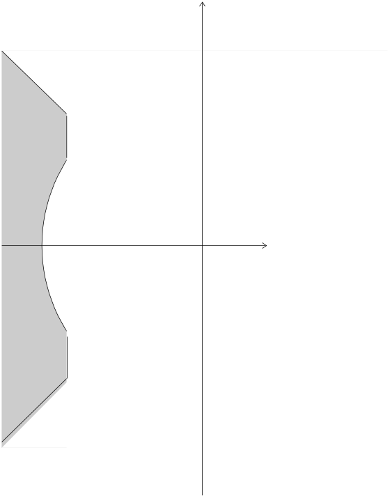
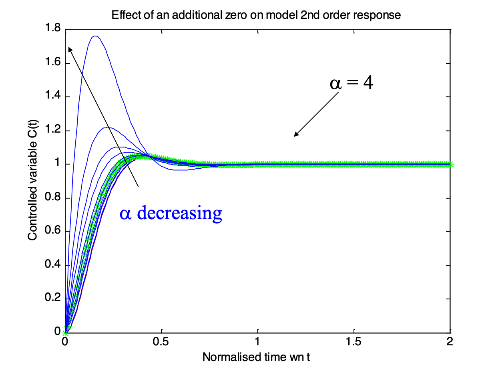

Lecturer
Set up MATLAB
cd matlab
pwd
clear all
imatlab_export_fig('print-svg') % Static svg figures.
format compact
ans =
'/Users/eechris/code/src/github.com/cpjobling/eglm03-textbook/02/matlab'
2. Steady-state and Transient Response¶
This chapter is concerned with the analysis of steady-state and transient response performance of control systems.
The second-order system response and its relationship to the closed-loop poles and zeros is revised. The effect of an additional zero or an additional pole on the 2nd order response is examined and pole-zero cancellation is discussed.
System type-number and its relationship to steady-state error response is revised.
2.1. Reading¶
You should read sections 4.2 Time Domain Criteria and 4.1 Steady-State Criteria of the Handout Control System Design Methods, Compensation Strategies and Design Criteria.
2.2. Transient Performance¶
2.2.1. A Second-Order System¶

Where are the system poles and what does the model 2nd Order response look like for each of these cases?
\(\omega_n\) |
\(\zeta\) |
|---|---|
3 |
3 |
3 |
1 |
3 |
0.8 |
3 |
0.5 |
3 |
0 |
2.2.2. Effect of Damping on 2nd Order Response¶
wn = 3;
z = [3, 2.5, 2, 1.5, 1, 0.9, 0.8, 1/sqrt(2), 0.5, 0.4, 0.3, 0.2, 0.1, 0];
zeta = 1/sqrt(2);
G = tf(wn^2, [1, 2*zeta*wn, wn^2])
subplot(211),pzmap( G),axis([-20, 1, -4, 4])
subplot(212),step( G),axis([0,10,0,2])
G =
9
-----------------
s^2 + 4.243 s + 9
Continuous-time transfer function.
Or download and run this script second_resp.m in MATLAB.

2.2.3. How do the natural frequency and damping ratio relate to pole locations?¶
2.2.4. How do the transient performance criteria map to the closed loop poles?¶
2.2.4.1. Settling time \(T_s\)¶
Settling time is related to relative stability and speed of response.
1% settling time:

2.2.4.2. Rise Time \(T_r\)¶
Rise time is related to speed of response

2.2.4.3. Percentage overshoot (%OS or \(M_p\))¶
Percentage overshoot is related to damping

2.2.4.4. Combined constraints¶
If system has inadequate rise time (too slow) we must raise the natural frequency
If system has too much overshoot we need to increase damping
If transient persists too long, move the poles further to the left in the s-plane

2.2.5. What if the system is not second order?¶
What is the effect of an extra zero?
What is the effect of an extra pole?
What if there are many poles and zeros?
2.2.5.1. Effect of an Extra Zero¶
First normalize transfer function:
Then add a zero
Note that \(\alpha\) is a multiplier of the real part of the complex poles \(\zeta\omega_n\).
2.2.5.2. 2nd order system with extra zero¶
Matlab demo (run zero2nd.m):
zero2nd
Tc =
1000
---------------------
10 s^2 + 140 s + 1000
Continuous-time transfer function.

Design curves (see handout):

2.2.5.3. .. how about adding an extra pole?¶
Note that \(\alpha\) is a multiplier of the real part of the complex poles.
2.2.5.4. 2nd order system with extra pole¶
Matlab demo (run pole2nd.m):
pole2nd
Tc =
1000
---------------------
10 s^2 + 140 s + 1000
Continuous-time transfer function.

Design curves (see handout):

2.2.6. Dominant poles and order reduction¶
Because the time response of many real systems will be dominated by two or three low frequency poles, a complex high order system can often be simplified by ignoring the effects of high-frequency poles and zeros or a pole that is effectively cancelled by a zero. This MATLAB script file demonstrates this.
Matlab demo (Run reduction.m)
In this example we ignore any poles or zeros that are located 4 or more times the real part of the dominant poles \(s = -1 \pm j\) or poles that a cancelled by a closed-loop zero and see that the seventh order system is effectively only a third-order system.
sigma = 1;
wd = 1;
disp('Full order system')
zeros = [-6*sigma; -3.2*sigma]
poles = [-9*sigma
-7*sigma+j*2*wd
-7*sigma-j*2*wd
-3*sigma
-2*sigma
-sigma+j*wd
-sigma-j*wd]
g = zpk(zeros,poles,prod(abs(poles))/prod(abs(zeros)));
Full order system
zeros =
-6.0000
-3.2000
poles =
-9.0000 + 0.0000i
-7.0000 + 2.0000i
-7.0000 - 2.0000i
-3.0000 + 0.0000i
-2.0000 + 0.0000i
-1.0000 + 1.0000i
-1.0000 - 1.0000i
subplot(121)
pzmap(poles,zeros)
subplot(122)
step(g)
Now remove redundant terms
Step 1: remove high frequency pole at \(-9*\sigma\)
z1 = zeros
p1 = poles(2:7)
g1 = zpk(z1,p1,prod(abs(p1))/prod(abs(z1)));
z1 =
-6.0000
-3.2000
p1 =
-7.0000 + 2.0000i
-7.0000 - 2.0000i
-3.0000 + 0.0000i
-2.0000 + 0.0000i
-1.0000 + 1.0000i
-1.0000 - 1.0000i
subplot(121)
pzmap(p1,z1)
subplot(122)
step(g,g1)
Step 2: remove complex hf pole pair
z2 = z1
p2 = p1(3:6)
g2 = zpk(z2,p2,prod(abs(p2))/prod(abs(z2)));
z2 =
-6.0000
-3.2000
p2 =
-3.0000 + 0.0000i
-2.0000 + 0.0000i
-1.0000 + 1.0000i
-1.0000 - 1.0000i
subplot(121)
pzmap(p2,z2)
subplot(122)
step(g,g1,g2)
Step 3: remove hf zero
z3= z2(2)
p3 = p2
g3 = zpk(z3,p3,prod(abs(p3))/prod(abs(z3)));
z3 =
-3.2000
p3 =
-3.0000 + 0.0000i
-2.0000 + 0.0000i
-1.0000 + 1.0000i
-1.0000 - 1.0000i
subplot(121)
pzmap(p3,z3)
subplot(122)
step(g,g1,g2,g3)
Step 4: remove pole-zero cancellation terms
z4= []
p4 = p3(2:4)
g4 = zpk(z4,p4,prod(abs(p4))/prod(abs(z4)));
z4 =
[]
p4 =
-2.0000 + 0.0000i
-1.0000 + 1.0000i
-1.0000 - 1.0000i
subplot(121)
pzmap(p4,z4)
subplot(122)
step(g,g1,g2,g3,g4)
Step 5: remove last non-dominant pole’)
z5 = z4
p5 = p4(2:3)
g5 = zpk(z5,p5,prod(abs(p5))/prod(abs(z5)));
z5 =
[]
p5 =
-1.0000 + 1.0000i
-1.0000 - 1.0000i
subplot(121)
pzmap(p5,z5)
subplot(122)
step(g,g1,g2,g3,g4,g5)
Original system
g
g =
298.12 (s+6) (s+3.2)
-------------------------------------------------
(s+9) (s+3) (s+2) (s^2 + 2s + 2) (s^2 + 14s + 53)
Continuous-time zero/pole/gain model.
Reduced order system
g4
g4 =
4
--------------------
(s+2) (s^2 + 2s + 2)
Continuous-time zero/pole/gain model.
subplot(221)
pzmap(poles,zeros)
subplot(222)
step(g)
subplot(223)
pzmap(p4,z4)
subplot(224)
step(g,g4)
What are the steady-state performance criteria?
2.3. Steady-state response¶
Canonical system
Disturbance rejection
System type for non-unity gain feedback
2.3.1. Canonical System¶
(unity-gain feedback)

2.3.2. Steady-state Performance¶
For a unity-gain negative feedback system with open-loop transfer function Go(s) the steady-state error (SSE) response of the closed-loop system is related to system type number according to the table shown below.
| System Type Number | ||||
| Type 0 | Type 1 | Type 2 | ||
| Type of input | SSE | Step | Velocity | Acceleration |
| Step | $$\frac{1}{1+K_p}$$ | $$\frac{1}{1+K_p}$$ | $\infty$ | $\infty$ |
| Ramp | $$\frac{1}{K_v}$$ | $$0$$ | $$\frac{1}{K_v}$$ | $\infty$ |
| Parabola | $$\frac{1}{K_a}$$ | $$0$$ | $$0$$ | $$\frac{1}{K_a}$$ |
Position error constant for step input: \(R(s) = 1/s\):
Velocity error constant for ramp input: \(R(s) = 1/s^2\):
Acceleration error constant for parabolic input: \(R(s) = 1/s^3\):
2.4. Special Cases¶
For these models calculate the error response (\(E(s) = G_o(s)N_d(s)\) for the “disturbance rejection” case and \(E(s) = R(s) - C(s)\) for the “non-unity-gain-feedback”) case and use the final value theorem to calculate the steady state step error.
Compare your result with the result of the simulation.
You should note that in both cases the plant transfer function has type number 1. Do the rules of system type number as you understand them carry over to these special cases?
2.4.1. Disturbance rejection? (Compliance)¶
Assuming that the system is originally at steady-state (\(E(s) = R(s) - C(s) = 0\)) what is the steady-state error to a step change in the disturbance in \(n_d(t)\)? (\(N_d(s) = 1/s\))

[Model file disturbance_rejection.mdl]
disturbance_rejection
2.5. Further Reading¶
The System Metrics section of the Control Systems Wikibook amplifies some of the topics covered in this chapter.
The topics covered in this chapter are also amplified in
Nise. Chapter 4: Time Response.
Dorf and Bishop. Chapter 5: The Performance of Feedback Control Systems.